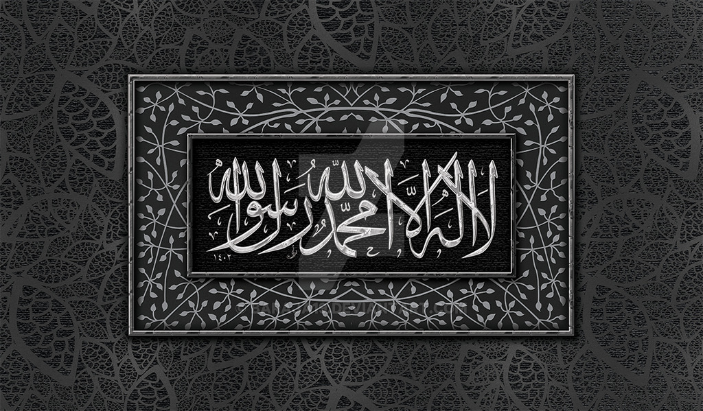
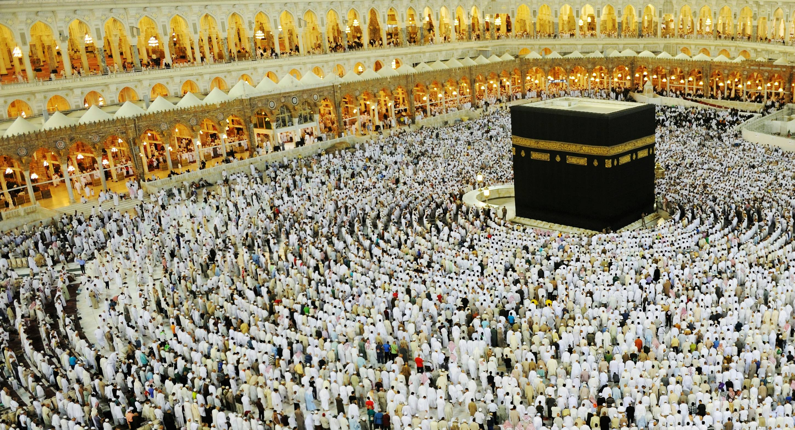

Guide us to the straight path. – Al Fatiha 6.
What is ISLAM ?
Islam means to achieve peace – peace with God, peace within oneself, and peace with the creations of God – through wholly submitting oneself to God and accepting His guidance.
The term Islam derives from the three-letter Arabic root, S (س)- L (ل)- M (م), which generates words with interrelated meanings, including “surrender”, “submission”, “commitment” and “peace”. Commonly, Islam refers to the monotheistic religion revealed to Muhammad ibn (son of) Abdullah between 610 and 632 of the Common Era.
The name Islam was instituted by the Qur’an, the sacred scripture revealed to Muhammad. For believers, Islam is not a new religion. Rather, it represents the last reiteration of the primordial message of God’s Oneness, a theme found in earlier monotheistic religious traditions.
Shahadah
"There is no God but Allah, and Muhammad is his messenger." This is the basic statement of the Islamic faith: anyone who cannot recite this wholeheartedly is not a Muslim. The Shahadah is the first of the Five Pillars of Islam.
- When a Muslim recites this they proclaim:
- That Allah is the only God, and that Muhammad is his prophet
- That they personally accept this as true
- That they will obey all the commitments of Islam in their life
Salat
Salat is the obligatory Muslim prayers, performed five times each day by Muslims.It is the second Pillar of Islam.
- God ordered Muslims to pray at five set times of day:
- Salat al-fajr: dawn, before sunrise
- Salat al-zuhr: midday, after the sun passes its highest
- Salat al-'asr: the late part of the afternoon
- Salat al-maghrib: just after sunset
- Salat al-'isha: between sunset and midnight All Muslims try to do this. Muslim children as young as seven are encouraged to pray.
Zakat

Zakat is the compulsory giving of a set proportion of one's wealth to charity. It is regarded as a type of worship and of self-purification. Zakat is the third Pillar of Islam.Zakat does not refer to charitable gifts given out of kindness or generosity, but to the systematic giving of 2.5% of one's wealth each year to benefit the poor.
- The benefits of Zakat, apart from helping the poor, are as follows:
- Obeying God
- Helping a person acknowledge that everything comes from God on loan and that we do not really own anything ourselve
- And since we cannot take anything with us when we die we need not cling to it
- Acknowledging that whether we are rich or poor is God's choice
- So we should help those he has chosen to make poor
- Learning self-discipline
- Freeing oneself from the love of money
- Freeing oneself from love of oneself
- Behaving honestly The 2.5% rate only applies to cash, gold and silver, and commercial items. There are other rates for farm and mining produce, and for animals.
Sawm
.jpg "Sawm")
Sawm is fasting. It's the fourth of the Five Pillars of Islam.Muslims are required to fast during Ramadan, the ninth month of the Islamic calendar.
- During the 29/30 days of Ramadan all adult Muslims must give up the following things during the hours of daylight:
- Food or drink of any sort
- Smoking, including passive smoking
- Sexual activity Muslims who are physically or mentally unwell may be excused some of these, as may those who are under twelve years old, the very old, those who are pregnant, breast-feeding, menstruating, or travelling. If an adult does not fast for the reasons above they should try to make up the fast at a later date, or make a donation to the poor instead. Muslims do not only abstain from physical things during Ramadan. They are also expected to do their best to avoid evil thoughts and deeds as well.
Hajj
Once a year, Muslims of every ethnic group, colour, social status, and culture gather together in Mecca and stand before the Kaaba praising Allah together. It is a ritual that is designed to promote the bonds of Islamic brotherhood and sisterhood by showing that everyone is equal in the eyes of Allah. The Hajj makes Muslims feel real importance of life here on earth, and the afterlife, by stripping away all markers of social status, wealth, and pride. In the Hajj all are truly equal. The Hajjis or pilgrims wear simple white clothes called Ihram. During the Hajj the Pilgrims perform acts of worship and they renew their sense of purpose in the world. Mecca is a place that is holy to all Muslims. It is so holy that no non-Muslim is allowed to enter. For Muslims, the Hajj is the fifth and final pillar of Islam.
It occurs in the month of Dhul Hijjah which is the twelfth month of the Islamic lunar calendar. It is the journey that every sane adult Muslim must undertake at least once in their lives if they can afford it and are physically able.